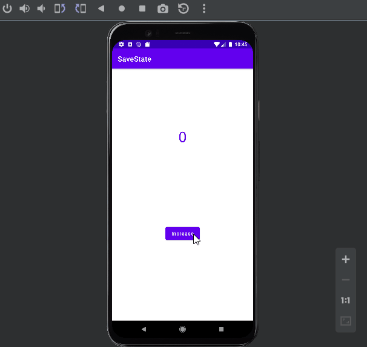

In this section, we’ll be discussing the two vital methods for managing the state of the application, namely onSaveInstanceState
and onRestoreInstanceState.
We’ll be developing a Counter Android Application in which we’ll handle the state of the application when the configuration changes.
So, let's get started.
Creating the App
Create an App called SaveState from empty activity which contains only a TextView
and a Button
Now we go with the code of the MainActivity.kt. It will simply have a listener so that when the
button is pressed, the counter increases by 1. For this we will have a global variable counter that we will initialize to 0
and that we will increase each time we press the button. It's an easy app but it serves us for that example.
MainActivity.kt
import androidx.appcompat.app.AppCompatActivity
import android.os.Bundle
import android.widget.Button
import android.widget.TextView
class MainActivity : AppCompatActivity() {
private var counter=0
private val tvCounter: TextView by lazy { findViewById(R.id.tvCounter) }
private val btnInc: Button by lazy { findViewById(R.id.btnInc) }
override fun onCreate(savedInstanceState: Bundle?) {
super.onCreate(savedInstanceState)
setContentView(R.layout.activity_main)
btnInc.setOnClickListener {
increaseCounter()
}
updateTvCounter()
}
private fun increaseCounter() {
counter++
updateTvCounter()
}
private fun updateTvCounter() {
tvCounter.text=counter.toString()
}
}
Running App
The app works as expected. But what if we turn over the mobile phone to landscape position
Running App
As we can see, the counter value is set to 0 again. This is because when we turn the mobile, the activity is created again, starting the counter at 0.
Let's add a Log to check that in the MainActitity
private fun log(text:String){
Log.d(TAG, text )
}
And remember create the TAG
import ......
const val TAG ="SAVE_STATE_TAG"
class MainActivity : AppCompatActivity() { .....
Now every time we enter the onCreate we execute the log function
override fun onCreate(savedInstanceState: Bundle?) {
super.onCreate(savedInstanceState)
setContentView(R.layout.activity_main)
log("onCreate Method")
.............
Launch the App and let's see
onCreate is called two times
onSaveInstanceState and onRestorenIstanceState
onSaveInstanceState allows us to save data after the activity stops.
onRestorenIstanceState allows us to retrieve previously stored data
To see when each of these methods are executed we are going to override them and call our log function, in addition we will also include the
onResume function on the MainActivity.kt
override fun onResume() {
super.onResume()
log("We are onResume")
}
override fun onSaveInstanceState(outState:Bundle){
super.onSaveInstanceState(outState)
log("We are onSaveInstanceState")
}
override fun onRestoreInstanceState(savedInstanceState: Bundle) {
super.onRestoreInstanceState(savedInstanceState)
log("We are onRestoreInstanceState")
}
If we launch the application and later turn the mobile, the result of the log will be as follows.
//App is recently launched
com.cartatar.savestate D/SAVE_STATE_TAG: onCreate Method
com.cartatar.savestate D/SAVE_STATE_TAG: We are onResume
//Here we rotate the mobile
com.cartatar.savestate D/SAVE_STATE_TAG: We are onSaveInstanceState
com.cartatar.savestate D/SAVE_STATE_TAG: onCreate Method
com.cartatar.savestate D/SAVE_STATE_TAG: We are onRestoreInstanceState
com.cartatar.savestate D/SAVE_STATE_TAG: We are onResume
Saving and Restoring the State
Now, we are using the Bundle to save our data so we can retrieve it later.
We simply have to add our counter to the Bundle so that we can later retrieve it.
Remember to use the same Key to retrieve it, the best option is to create a constant.
MainActivity.kt
import androidx.appcompat.app.AppCompatActivity
import android.os.Bundle
import android.util.Log
import android.widget.Button
import android.widget.TextView
const val TAG ="SAVE_STATE_TAG"
const val COUNTER_KEY="COUNTER_KEY"
class MainActivity : AppCompatActivity() {
private var counter=0
private val tvCounter: TextView by lazy { findViewById(R.id.tvCounter) }
private val btnInc: Button by lazy { findViewById(R.id.btnInc) }
override fun onCreate(savedInstanceState: Bundle?) {
super.onCreate(savedInstanceState)
setContentView(R.layout.activity_main)
log("onCreate Method")
btnInc.setOnClickListener {
increaseCounter()
}
}
private fun increaseCounter() {
counter++
updateTvCounter()
}
private fun updateTvCounter() {
tvCounter.text=counter.toString()
}
private fun log(text:String){
Log.d(TAG, text )
}
override fun onResume() {
super.onResume()
log("We are onResume")
updateTvCounter()
}
override fun onSaveInstanceState(outState:Bundle){
super.onSaveInstanceState(outState)
log("We are onSaveInstanceState")
outState.putInt(COUNTER_KEY,counter)
}
override fun onRestoreInstanceState(savedInstanceState: Bundle) {
super.onRestoreInstanceState(savedInstanceState)
log("We are onRestoreInstanceState")
counter=savedInstanceState.getInt(COUNTER_KEY)
}
}
Notice that we've moved the updateTvCounter() method from onCreate to onResume
 Save State Working ok EditText save its sate internally so you don't have to implement anything for them.
For more complex Apps, it is better to use ViewModel pattern.
Android uses a file system which is imilar to disk-based file systems on other platforms. The system provides several options for you to save your app data:
App-specific storage: Store files that are meant for your app's use only, either in dedicated directories within an
internal storage volume or different dedicated directories within external storage .
Use the directories within internal storage to save sensitive information that other apps shouldn't access.
Shared storage: Store files that your app intends to share with other apps, including media, documents, and other files.
Preferences: Store private, primitive data in key-value pairs.
Databases: Store structured data in a private database using the Room persistence library.
The characteristics of these options are summarized in the following table:
The solution you choose depends on your specific needs:
How much space does your data require?
Internal storage has limited space for app-specific data. Use other types of storage if you need to save a substantial amount of data.
How reliable does data access need to be?
If your app's basic functionality requires certain data, such as when your app is starting up, place the data within internal storage directory or a database. App-specific files that are stored in external storage aren't always accessible because some devices allow users to remove a physical device that corresponds to external storage.
What kind of data do you need to store?
If you have data that's only meaningful for your app, use app-specific storage. For shareable media content, use shared storage so that other apps can access the content.
For structured data, use either preferences (for key-value data) or a database (for data that contains more than 2 columns).
Should the data be private to your app?
When storing sensitive data—data that shouldn't be accessible from any other app—use internal storage, preferences, or a database.
Internal storage has the added benefit of the data being hidden from users.
Access app-specific files
In many cases, your app creates files that other apps don't need to access, or shouldn't access. The system provides the following locations for storing such app-specific files:
Internal storage directories: These directories include both: a dedicated location for storing persistent files,
and another location for storing cache data. The system prevents other apps from accessing these locations, and on Android 10 (API level 29)
and higher, these locations are encrypted. These characteristics make these locations a good place to store sensitive data that only your app itself can access.
External storage directories : These directories include both a dedicated location for storing persistent files, and another
location for storing cache data. Although it's possible for another app to access these directories if that app has the proper permissions,
the files stored in these directories are meant for use only by your app. If you specifically intend to create files that other apps should be able to access,
your app should store these files in the shared storage part of external storage instead.
When the user uninstalls your app, the files saved in app-specific storage are removed. Because of this behavior, you shouldn't use this storage to save anything that
the user expects to persist independently of your app. For example, if your app allows users to capture photos, the user would expect that they can access those
photos even after they uninstall your app. So you should instead use shared storage to save those types of files to the appropriate media collection.
Access from internal storage
For each app, the system provides directories within internal storage where an app can organize its files. One directory is designed for your app's persistent files,
and another contains your app's cached files. Your app doesn't require any system permissions to read and write to files in these directories.
Other apps cannot access files stored within internal storage. This makes internal storage a good place for app data that other apps shouldn't access.
Keep in mind, however, that these directories tend to be small. Before writing app-specific files to internal storage, your app should query the free space
on the device.
This snippet allows us to know how much free space on the device
// App needs 10 MB within internal storage.
const val NUM_BYTES_NEEDED_FOR_MY_APP=1024 * 1024 * 10L;
val storageManager=applicationContext.getSystemService<StorageManager>()!!
val appSpecificInternalDirUuid: UUID=storageManager.getUuidForPath(filesDir)
val availableBytes: Long =
storageManager.getAllocatableBytes(appSpecificInternalDirUuid)
if (availableBytes >= NUM_BYTES_NEEDED_FOR_MY_APP) {
storageManager.allocateBytes(
appSpecificInternalDirUuid, NUM_BYTES_NEEDED_FOR_MY_APP)
} else { //We don't have enough space we ask for removing something
val storageIntent=Intent().apply {
// To request that the user remove all app cache files instead, set
// "action" to ACTION_CLEAR_APP_CACHE.
action=ACTION_MANAGE_STORAGE
}
}
Access persistent files
Your app's ordinary, persistent files reside in a directory that you can access using the filesDir property of a context
object. The framework provides several methods to help you access and store files in this directory.
You can use the File API to access and store files.
To help maintain your app's performance, don't open and close the same file multiple times .
The following code snippet demonstrates how to use the File API:
val file=File(context.filesDir, filename)
Store a file using a stream
As an alternative to using the File API, you can call openFileOutput() to get a
FileOutputStream that writes to a file within the filesDir directory.
The following code snippet shows how to write some text to a file:
val filename="myfile"
val fileContents="Hello world!"
context.openFileOutput(filename, Context.MODE_PRIVATE).use {
it.write(fileContents.toByteArray())
}
We can see the file created in the Android Studio Device File Explorer
Android Studio Device File Explorer Caution: On devices that run Android 7.0 (API level 24) or higher, unless you pass the Context.MODE_PRIVATE
file mode into openFileOutput() , a SecurityException will be thrown .
To allow other apps to access files stored in this directory within internal storage, use a FileProvider
with the FLAG_GRANT_READ_URI_PERMISSION attribute.
You can get an array containing the names of all files within the filesDir directory by calling fileList(),
as shown in the following code snippet:
var files: Array<String>=context.fileList()
Create nested directories
You can also create nested directories, or open an inner directory, by calling getDir():
context.getDir(dirName, Context.MODE_PRIVATE)
Note: filesDir is always an ancestor directory of this new directory.
Create cache files
If you need to store sensitive data only temporarily, you should use the app's designated cache directory within internal storage to save the data.
As is the case for all app-specific storage, the files stored in this directory are removed when the user uninstalls your app, although the files in this directory
might be removed sooner.
To create a cached file, call File.createTempFile() :
Your app accesses a file in this directory using the cacheDir property of a context object and the File API:
val cacheFile=File(context.cacheDir, filename)
Remove cache files
Even though Android sometimes deletes cache files on its own, you shouldn't rely on the system to clean up these files for you.
You should always maintain your app's cache files within internal storage.
To remove a file from the cache directory within internal storage, use one of the following methods:
The delete() method on a File object that represents the file:
cacheFile.delete()
The deleteFile() method of the app's context, passing in the name of the file:
context.deleteFile(cacheFileName)
Access from external storage
If internal storage doesn't provide enough space to store app-specific files, consider using external storage instead.
The system provides directories within external storage where an app can organize files that provide value to the user only within your app.
One directory is designed for your app's persistent files, and another contains your app's cached files
On Android 4.4 (API level 19) or higher, your app doesn't need to request any storage-related permissions to access app-specific
directories within external storage. The files stored in these directories are removed when your app is uninstalled.
Caution : The files in these directories aren't guaranteed to be accessible, such as when a removable
SD card is taken out of the device. If your app's functionality depends on these files, you should instead store the files within internal storage.
On devices that run Android 9 (API level 28) or lower , your app can access the app-specific files that belong to other apps,
provided that your app has the appropriate storage permissions. To give users more control over their files and to limit file clutter,
apps that target Android 10 (API level 29) and higher are given scoped access into external storage, or scoped storage, by default.
When scoped storage is enabled, apps cannot access the app-specific directories that belong to other apps.
Verify that storage is available
Because external storage resides on a physical volume that the user might be able to remove, verify that the volume is accessible before trying
to read app-specific data from, or write app-specific data to, external storage .
You can query the volume's state by calling Environment.getExternalStorageState() . If the returned state is MEDIA_MOUNTED,
then you can read and write app-specific files within external storage. If it's MEDIA_MOUNTED_READ_ONLY , you can only read these files.
For example, the following methods are useful to determine the storage availability:
// Checks if a volume containing external storage is available
// for read and write.
fun isExternalStorageWritable(): Boolean {
return Environment.getExternalStorageState() == Environment.MEDIA_MOUNTED
}
// Checks if a volume containing external storage is available to at least read.
fun isExternalStorageReadable(): Boolean {
return Environment.getExternalStorageState() in
setOf(Environment.MEDIA_MOUNTED, Environment.MEDIA_MOUNTED_READ_ONLY)
}
Select a physical storage location
Sometimes, a device that allocates a partition of its internal memory as external storage also provides an SD card slot. This means that the device has multiple physical volumes
that could contain external storage, so you need to select which one to use for your app-specific storage.
To access the different locations, call ContextCompat.getExternalFilesDirs() . As shown in the code snippet, the first element
in the returned array is considered the primary external storage volume. Use this volume unless it's full or unavailable.
val externalStorageVolumes: Array<out File> =
ContextCompat.getExternalFilesDirs(applicationContext, null)
val primaryExternalStorage=externalStorageVolumes[0]
If our device has a memory card and also HD, externalStorageVolumes[1] probably be the SD card and its path woul be something like this
val secondaryExternalStorage=externalStorageVolumes[1] //be careful because the card may have been removed and throw a NullPointerException
println(secondaryExternalStorage.absolutePath)
...
//OUTPUT
/storage/11EA-1213/Android/data/com.catata.filesexample/files
Access persistent files
To access app-specific files from external storage, call getExternalFilesDir().
To help maintain your app's performance, don't open and close the same file multiple times.
The following code snippet demonstrates how to call getExternalFilesDir():
val appSpecificExternalDir=File(context.getExternalFilesDir(null), filename)
//PATH
/storage/emulated/0/Android/data/com.catata.filesexample/files/my_file
On Android 11 (API level 30) and higher, apps cannot create their own app-specific directory on external storage.
Create cache files
To add an app-specific file to the cache within external storage, get a reference to the externalCacheDir:
val externalCacheFile=File(context.externalCacheDir, filename)
Remove cache files
To remove a file from the external cache directory, use the delete() method on a File object that represents the file
externalCacheFile.delete()
Media content
If your app works with media files that provide value to the user only within your app, it's best to store them in app-specific directories within external storage,
as demonstrated in the following code snippet:
fun getAppSpecificAlbumStorageDir(context: Context, albumName: String): File? {
// Get the pictures directory that's inside the app-specific directory on
// external storage.
val file=File(context.getExternalFilesDir(
Environment.DIRECTORY_PICTURES), albumName)
if (!file?.mkdirs()) {
Log.e(LOG_TAG, "Directory not created")
}
return file
}
It's important that you use directory names provided by API constants like DIRECTORY_PICTURES. These directory names ensure that the files
are treated properly by the system. If none of the pre-defined sub-directory names suit your files, you can instead pass null
into getExternalFilesDir() . This returns the root app-specific directory within external storage.
Shared are intended to store small amounts of information through key-value.
It must be uncommitted information since Android will generate an XML file where it will store all this information unencrypted.
These files can be shared or private.
In this project we are going to create a very simple application in which if there is no name saved, it will ask us to put it,
if on the contrary we already have one, it will appear on the screen together with a delete button. Another important part is that we will
make a design pattern , the Singleton .
The first thing we will do is create a new project and we will make a very simple layout of the layout
You will see that there are components that are overlapping on each other, this is because in this way we're going to show the possible cases that a view can have.
The next thing we will do is create a class where we will define everything necessary to work with shared, we will call it Prefs.
This class will receive a context , in this case that of the application, to be able to instantiate it only once when starting
the application and have a pref object .
Prefs.kt
class Prefs (context: Context) {
val prefs: SharedPreferences =context.getSharedPreferences (PREFS_NAME, Context.MODE_PRIVATE)
var name: String
get ()=prefs.getString(SHARED_NAME, "") ?: ""
set (value)=prefs.edit().putString (SHARED_NAME, value).apply ()
companion object {
const val PREFS_NAME="com.catata.sharedpreferencesexample"
const val SHARED_NAME="shared_name"
}
}
The first thing we have done has been to define two constants, PREFS_NAME and SHARED_NAME,
the first will be the key of the pref object that we will create later and the second the key of the name that we will store.
Remember that shared preferences are stored with key-value, which means that to request the value of "yam" we need to request it through the SHARED_NAME key.
Also note that we have defined a yam variable that will be where we store the name as I said before,
but that we have overridden the get and set method, so when we ask for the value of name, it will access the prefs object
and request that value corresponding to the SHARED_NAME key. The same with the set, that through prefs.edit().
PutString (SHARED_NAME, value).apply() store the value we tell it. Obviously if it were another type of variable, for example an Int,
we would change the putString() for a putInt() and so on with each type of variable.
Now we are going to create a somewhat different class. This class will extend Application () and that means that it will
be the first thing to run when the application is opened.
Remember that to extend this class in Kotlin it is very simple, we simply have to create a class as usual and after the name after a colon,
we will put the class in question.
SharedApp.kt
class SharedApp: Application () {
companion object {
lateinit var prefs: Prefs
}
override fun onCreate () {
super.onCreate ()
prefs=Prefs (applicationContext)
}
}
Although the class is quite small, we are going to comment on some things. To begin, we have declared a companion object that will be the
object of our Prefs class that we will use throughout the project, so for you to understand the companion object is a way
to have an object available throughout the project (a static object for those who know java). And in front of it there is a lateinit
that means that it will be instantiated later, in this example in the onCreate() method of this class.
Remember that for this class to be launched when opening the app we must go to AndroidManifest.xml and add
android: name=".SharedApp"
inside the<Application> open tag
Now we will go to our MainActivity to develop some logic.
The idea is to create two methods , one will show a view for guests and the other the view of the profile, the difference between them will be that if you are
invited it will show you an EditText and a save button and on the contrary if there is already a name saved in data persistence as it will greet user and will
have a button to delete that field from memory.
fun showProfile() {
binding.tvName.visibility=View.VISIBLE
binding.tvName.text="Hello ${SharedApp.prefs.name}"
binding.btnDeleteValue.visibility=View.VISIBLE
binding.etName.visibility=View.INVISIBLE
binding.btnSaveValue.visibility=View.INVISIBLE
}
fun showGuest () {
binding.tvName.visibility=View.INVISIBLE
binding.btnDeleteValue.visibility=View.INVISIBLE
binding.etName.visibility=View.VISIBLE
binding.btnSaveValue.visibility=View.VISIBLE
}
As you already know, a component can be in three visibility states:
Visible: The component is seen on the screen, this option is activated by default.
Invisible: The component is not visible but it is still on the screen, so you can continue working with it,
for example putting something to the right of an invisible component.
Gone : The component is NOT on the screen so there is no interaction possible.
Notice that the showProfile method assigns a value to tvName, which means that it is accessing
the shared preferences. To do this we simply call the SharedApp class (the one that contains
the companion object), the object we are talking about and the name attribute that, as we saw before, we have modified so that when we do a get
(remove the information it stores) it asks for our shared preference the value of SHARED_NAME .
Now we need a method that checks if there is information in name and thus check if the user has saved his name.
fun configView () {
if (isSavedName()) showProfile() else showGuest()
}
fun isSavedName (): Boolean {
val myName=SharedApp.prefs.name
return myName!=EMPTY_VALUE
}
The whole class would look like this.
MainActivity.kt
import androidx.appcompat.app.AppCompatActivity
import android.os.Bundle
import android.view.View
import com.cartatar.sharedpreferencesexample.databinding.ActivityMainBinding
class MainActivity: AppCompatActivity () {
private lateinit var binding: ActivityMainBinding
val EMPTY_VALUE=""
override fun onCreate (savedInstanceState: Bundle?) {
super.onCreate (savedInstanceState)
setContentView (ActivityMainBinding.inflate (layoutInflater) .also {binding=it} .root)
binding.btnSaveValue.setOnClickListener {
SharedApp.prefs.name=binding.etName.text.toString ()
configView ()
}
binding.btnDeleteValue.setOnClickListener {
SharedApp.prefs.name=EMPTY_VALUE
configView ()
}
}
fun showProfile () {
binding.tvName.visibility=View.VISIBLE
binding.tvName.text="Hello ${SharedApp.prefs.name}"
binding.btnDeleteValue.visibility=View.VISIBLE
binding.etName.visibility=View.INVISIBLE
binding.btnSaveValue.visibility=View.INVISIBLE
}
fun showGuest () {
binding.tvName.visibility=View.INVISIBLE
binding.btnDeleteValue.visibility=View.INVISIBLE
binding.etName.visibility=View.VISIBLE
binding.btnSaveValue.visibility=View.VISIBLE
}
fun configView () {
if (isSavedName ()) showProfile () else showGuest ()
}
fun isSavedName (): Boolean {
val myName=SharedApp.prefs.name
return myName!=EMPTY_VALUE
}
}
Remember to enable view binding
App running
Here is where the shared preference is saved in xml file. Note the name of the file (com.catata.sharedpreferencesexample.xml)
and the name of the SharedPreference (shared_name)
Shared Preferences
Here's a link to Github with another example of using Shared Preferences.
Notice that we have two methods to access the SharedPreferences. On the one hand we have getPreferences , which obtains the normal and global
preferences and on the other hand we have, getSharedPreferences method to which we give a name of the preferences file, in case we want to have several files and separate the information
Here is another link to Github with an example
where we implement the DAO pattern and also with ViewModel pattern to access the saved data by means of a file through SharedPreferences.
Settings Screen
In this section we will see how to implement a settings screen using SharedPreferences
To start we are going to create a project from empty activity template and name the App as SharedSettings
The first thing we will do is add the dependencies, remember to also enable the viewBinding .
We are going to create a menu with a couple of options, one of them will not do anything, it is simply as an example to show the usefulness of the orderInCategory property.
So, we create the menu my_menu.xml inside the res/menu directory
As you can see, it is going to contain the MainFragment fragment, so you create a new blank fragment with this name.
In the layout, fragment_main.xml we are going to add a TextView
Now it is the turn of the MainActivity, we are going to link the menu created previously so that it is loaded in the activity, and we are also going to add a method
so that it responds to the actions of the menu created.
For this we are going to override two methods in the MainActivity.kt.
The first, onCreateOptionsMenu , is the one that loads or inflates the menu and the second is the one that is executed
when we select an item from our menu. As you can see, we give you which item has been selected and based on its ID we do one thing or another,
in our case we only respond to the item whose id is action_settings and what we do is open the activity that contains the settings screen.
Notice we haven't created the SettingsActivity yet
Now what we will do is add in MainFragment a listener of the SharedPreferences
so that it reacts when they are modified, in our case the only thing we will do is show it in a TextView. So MainFragment would look like this
class MainFragment:Fragment() {
private lateinit var binding: FragmentMainBinding
//listener is listening for every change on the SharedPreferences
private lateinit var listener: SharedPreferences.OnSharedPreferenceChangeListener
override fun onCreateView (
inflater: LayoutInflater, container: ViewGroup ?,
savedInstanceState: Bundle ?,
): View? {
// Inflate the layout for this fragment
return FragmentMainBinding.inflate (
inflater,
container,
false
) .also {binding=it} .root
}
override fun onViewCreated (view: View, savedInstanceState: Bundle?) {
super.onViewCreated (view, savedInstanceState)
/* Obtaining SharedPreferences */
val sharedPreferences: SharedPreferences =
PreferenceManager.getDefaultSharedPreferences(requireContext()/* Activity context */)
//Making the callback of the listener
listener=SharedPreferences.OnSharedPreferenceChangeListener {prefs, key ->
//Array with all the preferences
val preferences=prefs.all
//The key contains the name of the changed preference
val s=preferences [key] .toString ()
//Write the changed shared into TextView
binding.tvInfo.text=s
}
//we register the listener
sharedPreferences.registerOnSharedPreferenceChangeListener (listener)
}
}
Creating the settings screen.
First we create SettingsActivity from an empty activity template
The activity_settings.xml layout will simply have a fragment container.
As you can see, the container is waiting for SettingsFragment , but in this case it is a special fragment since it extends
PreferenceFragmentCompat . This class contains the onCreatePreferences method, which is the one that will
load the xml with the definition of the settings. SettingsFragment won't have layout file
SettingsFragment.kt
class SettingsFragment:PreferenceFragmentCompat() {
override fun onCreatePreferences (savedInstanceState: Bundle ?, rootKey: String?) {
setPreferencesFromResource(R.xml.my_settings, rootKey)
preferenceFragmentCompat=this
}
companion object {
var preferenceFragmentCompat:PreferenceFragmentCompat?=null
}
}
We create a companion object in case we want to access any of its preferences, we would do it with this code:
val preference=preferenceManager.preferenceScreen.findPreference<Preference>("preference_key")
In addition, the setPreferencesFromResource method passes as a parameter the my_settings.xml
file that is inside the res/xml directory. Well, let's make it.
As you can see we have put a small selection of elements that you can implement. For example, a switch, a list, an EditText or even a preference so that
clicking on it will take us to another activity.
Let's highlight, for example, ListPreference, we see that it has some entries that is an array, this is the texts that will be displayed and an entriesValues,
another array with the real values that will have the preference whose key is list_preference_1
As it refers to some arrays, let's create them inside the res / values folder, inside a file called, for example, cod_countries.xml. And whose content will be:
Activity.
Make an App with just one Activity and one menu option, this option launches the settings screen that contains a ListPreference with 3 or 4 colors for the background of the application, another ListPreference with 3 or 4 colors for the color
of the text and an EditTextPreference to change the title of the application
Here you have a possible solution.
Please, try to do it by yourself before
Room
Once we have seen some local persistence methods, we are going to see the handling of databases, in this case with
SQLite.
But as noted on the SQLite lite page, on this one, they highly recommend using the
Room persistence library.
Caution: Although these APIs are powerful, they are characterized by being quite specific and their use requires
a lot of time and effort.
There is no compile-time verification of raw SQL queries. As your data graph changes, you must manually update the affected SQL queries.
This process can be time consuming and cause errors.
You must use a lot of standard code to convert between SQL queries and data objects.
For these reasons, we highly recommend using the Room Persistence Library as an abstraction layer to access information from your app's SQLite databases.
To learn how to use Room we will create an application to manage our tasks.
We will add a task in the corresponding field, we will have a CheckBox to see if the task is done or not,
we can change its status by checking and unchecking the Check box and finally if we click on a task it will be eliminated.
It is already beginning to be an App of a certain level. For the realization of this App we will need applications knowledge about:
RecyclerView : The tasks will be shown as elements of the list.
Room : Database creation and access.
ViewModel : To separate the business logic from the views.
DAO pattern : To make persistence mode independent of logic.
Corroutines : To launch the DAO functions in a different thread from the main one.
The application will look something like this:
Running app
The first thing we will do is create a new application from the Empty Activity template.
Adding dependencies
Once loaded in Android Studio we will add the necessary dependencies:
We also add the activation of viewBinding in the same file
buildFeatures{
viewBinding true
}
As we can see we are going to make use of the Kapt method, in order to use it we will have to apply the plugin.
To do this in the same Gradle Module App file, in the plugins section we add it.
plugins {
id 'com.android.application'
id 'kotlin-android'
id 'kotlin-kapt'
}
Finally, as we have used variables for the versions, we can define them as always, making use of "def" or if we want it to be of
global use we go to the gradle file of the project and add an ext object with the definition and value of the variables.
Next we are going to create some files, so as keep an eye on of where we are and to be more organized we are going to create the necessary packages.
Dir structure
Note that MainActivity we have included it within a package called ui , since it takes care of the view.
We also have a package with everything related to data. We have the entities package, where we will define our model.
We also have created two interfaces to implement the DAO and TaskDatabase pattern with the
creation and definition of the Room Database .
We have an adapters package where we will have the RecyclerView adapter and finally the viewmodel package where we will have our ViewModel .
Starting to create files
Let's start, the first thing we will do is create our model or in Room terminology the entity.
TaskEntity.kt
import androidx.room.Entity
import androidx.room.PrimaryKey
@Entity(tableName = "task_entity")
data class TaskEntity (
@PrimaryKey(autoGenerate = true)
var id:Int = 0,
var name:String = "",
var isDone:Boolean = false
)
As we can see we use the Entity decorator , which allows us to assign the name of the table that will contain our tasks entity.
We can also see that we have defined an id attribute that will be the primary key and will also be generated by itself.
Finally, TaskEntity has a task name and a BooleanisDone attribute, which tells us if the task has been completed or not.
Dao Pattern (Data Access Object)
Now we are going to create the Dao pattern. Room defines its own Dao pattern through decorators,
but we will create a more generic interface in case we want to use another type of persistence such us Files. In this interface we will define the methods that we can use.
MyDao.kt
import com.catata.tasknotesroom.database.entities.TaskEntity
interface MyDao {
fun getAllTasks(): MutableList<TaskEntity>
fun addTask(taskEntity : TaskEntity):Long //Id of the new task
fun getTaskById(id: Long): TaskEntity
fun updateTask(taskEntity: TaskEntity):Int //Number of affected rows
fun deleteTask(taskEntity: TaskEntity):Int //Number of affected rows
}
As we can see, we have a method to recover all the tasks, another to recover a task given its ID, another to update a task and finally another to delete it.
The last two methods return the number of rows affected in the operation.
RecyclerView
To continue we are going to implement the recyclerview part. The first thing is to add it to the layout of the main activity.
We will also add a small form to add new tasks.
It is done with RelativeLayout but it could be done with any other Layout that we consider more comfortable.
Next we are going to create the view adapter with its corresponding ViewHolder .
adapters/TaskAdapter.kt
import android.view.LayoutInflater
import android.view.View
import android.view.ViewGroup
import android.widget.CheckBox
import android.widget.TextView
import androidx.recyclerview.widget.RecyclerView
import com.catata.tasknotesroom.R
import com.catata.tasknotesroom.database.entities.TaskEntity
class TasksAdapter(
val tasks: List<TaskEntity>,
val checkTask: (TaskEntity) -> Unit,
val deleteTask: (TaskEntity) -> Unit) : RecyclerView.Adapter<TasksAdapter.ViewHolder>() {
override fun onCreateViewHolder(parent: ViewGroup, viewType: Int): ViewHolder {
val layoutInflater = LayoutInflater.from(parent.context)
return ViewHolder(layoutInflater.inflate(R.layout.item_task, parent, false))
}
override fun onBindViewHolder(holder: ViewHolder, position: Int) {
val item = tasks[position]
holder.bind(item, checkTask, deleteTask)
}
override fun getItemCount() = tasks.size
class ViewHolder(view: View) : RecyclerView.ViewHolder(view) {
val tvTask = view.findViewById<TextView>(R.id.tvTask)
val cbIsDone = view.findViewById<CheckBox>(R.id.cbIsDone)
fun bind(task: TaskEntity, checkTask: (TaskEntity) -> Unit, deleteTask: (TaskEntity) -> Unit) {
tvTask.text = task.name
cbIsDone.isChecked = task.isDone
cbIsDone.setOnClickListener{checkTask(task)}
itemView.setOnClickListener { deleteTask(task) }
}
}
}
As we can see in the constructor, we pass it a list of tasks and two callbacks , one for when we click on the
Check box for the task performed and another for when we click on the entire element,
in which case we would delete said task. In this case we create within the ViewHolder the bind function that does all this task.
As you know, now we have to make tha layout for every item in the RecyclerView item_task.xml in the layout dir, this layout could looks like this
Before seeing how the MainActivity implementation would be, let's see how to implement the Database with Room.
Room
The Room library is an access layer to SQLite databases in Android applications.
Provides an easy way to create and access the database. It uses object-relational mapping , which consists of each row in a database
table corresponding to an object. It is also designed to easily integrate with the MVVM architecture.
To use the Room library you have to define 3 components:
Database : contains the reference to the database.
Entity: represents a database table.
Dao: It contains the methods with the queries to access the database. Will implement our dao MyDao
TaskDao
TaskDao will be the interface that will contain the queries to the database, we will implement our MyDao in it.
Here we will distinguish four kind of queries.
@Query: Queries are made directly to the database, we will use SQL to do them. In this example we will do two very simple ones, but impressive things can be done.
@Insert: It will be used to insert entities into the database, unlike @Query , you do not have to do any kind of query, but rather pass the object to insert.
@Update: They update an already inserted entity. We will only have to pass that modified object and it already takes care of updating it.
How do you know which object to modify? Well, because of our id (remember that it is the PrimaryKey).
@Delete: As its name indicates, it deletes an object that we pass to it from the table.
TaskDao.kt
import androidx.room.*
import com.catata.tasknotesroom.database.entities.TaskEntity
@Dao
interface TaskDao:MyDao {
@Query("SELECT * FROM task_entity")
override fun getAllTasks(): MutableList<TaskEntity>
@Insert
override fun addTask(taskEntity : TaskEntity):Long
@Query("SELECT * FROM task_entity WHERE id LIKE :id")
override fun getTaskById(id: Long): TaskEntity
@Update
override fun updateTask(taskEntity: TaskEntity):Int
@Delete
override fun deleteTask(taskEntity: TaskEntity):Int
}
Database
To create the database, a class must be created that must:
Be abstract
Extend RoomDatabase
Be annotated with @Database
Include the list of entities within the @Database annotation
Contain an abstract method that returns the class annotated with @Dao
Inside the class, the static method Room.databaseBuilder () is called to obtain the reference to the database.
It is convenient to use the singleton pattern , which ensures that there will only be a single instance of the database.
Create the TaskDatabase.kt class:
TaskDatabase.kt
import android.content.Context
import androidx.room.Database
import androidx.room.Room
import androidx.room.RoomDatabase
import com.catata.tasknotesroom.database.entities.TaskEntity
@Database(entities = arrayOf(TaskEntity::class), version = 1)
abstract class TasksDatabase : RoomDatabase() {
abstract fun taskDao(): TaskDao
companion object{ //Singleton Pattern
private var instance:TaskDao? = null
fun getInstance(context: Context):TaskDao{
return instance ?: Room.databaseBuilder(context, TasksDatabase::class.java, "tasks-db").build().taskDao().also { instance = it }
}
}
}
The first thing to look at is the @Database annotation, which specifies that the entity will be a list of TaskEntity
(entity that we have already created) and that the version is 1.
Versions are used for possible data migration when updating the App.
Let's imagine that we release a second version of the app and instead of 3 parameters we store 4, we cannot change our entity at once because there would be problems.
For that, the version is used, together with a migration file that tells the program what it will have to do to go from version 1 to version 2, 3 or whatever.
We must also make sure that our class extends from RoomDatabase() which is a class that we have thanks to importing the Room
dependency in our gradle.
Finally, it has a single function that refers to the DAO that we have created previously, if we had more Dao's then we would have to
implement them there as well.
The database instance will need three parameters, the context (this ), the class
of our database (TasksDatabase ) and the database name that we will give it, in this case we have called it "trasks-db".
ViewModel
It is time to implement our ViewModel , in this case we have chosen to create a LiveData
for each of the methods implemented in the database.
These methods will give responses to the requests of the View (MainActivity + RecyclerView)
val taskListLD:MutableLiveData<MutableList<TaskEntity>> = MutableLiveData()
val updateTaskLD:MutableLiveData<TaskEntity?> = MutableLiveData()
val deleteTaskLD:MutableLiveData<Int> = MutableLiveData()
val insertTaskLD:MutableLiveData<TaskEntity> = MutableLiveData()
We have also added a myDao variable which is what we will use to implement the Dao pattern.
In this case, we initialize it directly to the TaskDao of our TaskDatabase .
var myDao:MyDao = TasksDatabase.getInstance(context)
Finally, we implement the 4 methods that we will need. These methods call the corresponding MyDao method within a Corroutine
so as not to get in the way of the main thread.
fun getAllTasks(){
viewModelScope.launch(Dispatchers.IO) {
taskListLD.postValue(myDao.getAllTasks())
}
}
fun add(task:String) {
viewModelScope.launch(Dispatchers.IO) {
val id = myDao.addTask(TaskEntity(name = task))
val recoveryTask = myDao.getTaskById(id)
insertTaskLD.postValue(recoveryTask)
}
}
fun delete(task:TaskEntity){
viewModelScope.launch(Dispatchers.IO) {
val res = myDao.deleteTask(task)
if(res>0)
deleteTaskLD.postValue(task.id)
else{
deleteTaskLD.postValue(-1)
}
}
}
fun update(task:TaskEntity){
viewModelScope.launch(Dispatchers.IO) {
task.isDone = !task.isDone
val res = myDao.updateTask(task)
if(res>0)
updateTaskLD.postValue(task)
else
updateTaskLD.postValue(null)
}
}
Note that the scope of the coroutine is viewModelScope since we are inside the viewmodel, so the coroutine will live, at most, as long as the viewmodel is alive.
The TaskViewModel class would look like this:
TaskViewModel.kt
import android.app.Application
import androidx.lifecycle.AndroidViewModel
import androidx.lifecycle.MutableLiveData
import com.catata.tasknotesroom.database.MyDao
import com.catata.tasknotesroom.database.TasksDatabase
import com.catata.tasknotesroom.database.entities.TaskEntity
import kotlinx.coroutines.CoroutineScope
import kotlinx.coroutines.Dispatchers
import kotlinx.coroutines.launch
class TaskViewModel(application: Application): AndroidViewModel(application) {
val context = application
var myDao:MyDao = TasksDatabase.getInstance(context)
val taskListLD:MutableLiveData<MutableList<TaskEntity>> = MutableLiveData()
val updateTaskLD:MutableLiveData<TaskEntity?> = MutableLiveData()
val deleteTaskLD:MutableLiveData<Int> = MutableLiveData()
val insertTaskLD:MutableLiveData<TaskEntity> = MutableLiveData()
fun getAllTasks(){
viewModelScope.launch(Dispatchers.IO) {
taskListLD.postValue(myDao.getAllTasks())
}
}
fun add(task:String) {
viewModelScope.launch(Dispatchers.IO) {
val id = myDao.addTask(TaskEntity(name = task))
val recoveryTask = myDao.getTaskById(id)
insertTaskLD.postValue(recoveryTask)
}
}
fun delete(task:TaskEntity){
viewModelScope.launch(Dispatchers.IO) {
val res = myDao.deleteTask(task)
if(res>0)
deleteTaskLD.postValue(task.id)
else{
deleteTaskLD.postValue(-1)
}
}
}
fun update(task:TaskEntity){
viewModelScope.launch(Dispatchers.IO) {
task.isDone = !task.isDone
val res = myDao.updateTask(task)
if(res>0)
updateTaskLD.postValue(task)
else
updateTaskLD.postValue(null)
}
}
}
MainActivity
Now we only have to implement the View, the MainActivity code. Basically we will do the following:
private fun clearFocus(){
binding.etTask.setText("")
}
private fun Context.hideKeyboard() {
val inputMethodManager = getSystemService(Activity.INPUT_METHOD_SERVICE) as InputMethodManager
inputMethodManager.hideSoftInputFromWindow(currentFocus?.windowToken, 0)
}
All the code would look like this.
MainActivity.kt
import android.app.Activity
import android.content.Context
import androidx.appcompat.app.AppCompatActivity
import android.os.Bundle
import android.view.inputmethod.InputMethodManager
import android.widget.Toast
import androidx.lifecycle.ViewModelProvider
import androidx.recyclerview.widget.LinearLayoutManager
import androidx.recyclerview.widget.RecyclerView
import com.catata.tasknotesroom.adapters.TasksAdapter
import com.catata.tasknotesroom.database.entities.TaskEntity
import com.catata.tasknotesroom.databinding.ActivityMainBinding
import com.catata.tasknotesroom.viewmodel.TaskViewModel
class MainActivity : AppCompatActivity() {
private lateinit var binding: ActivityMainBinding
lateinit var recyclerView: RecyclerView
var tasks: MutableList<TaskEntity> = mutableListOf()
private lateinit var taskViewModel:TaskViewModel
lateinit var adapter: TasksAdapter
override fun onCreate(savedInstanceState: Bundle?) {
super.onCreate(savedInstanceState)
setContentView(ActivityMainBinding.inflate(layoutInflater).also {
binding = it
}.root)
taskViewModel = ViewModelProvider(this)[TaskViewModel::class.java]
taskViewModel.getAllTasks()
taskViewModel.taskListLD.observe(this){
tasks.clear()
tasks.addAll(it)
recyclerView.adapter?.notifyDataSetChanged()
}
taskViewModel.updateTaskLD.observe(this){ taskUpdated ->
if(taskUpdated == null){
showMessage("Error updating task")
}
}
taskViewModel.deleteTaskLD.observe(this){ id ->
if(id != -1){
val task = tasks.filter {
it.id == id
}[0]
val pos = tasks.indexOf(task)
tasks.removeAt(pos)
recyclerView.adapter?.notifyItemRemoved(pos)
}else{
showMessage("Error deleting task")
}
}
taskViewModel.insertTaskLD.observe(this){
tasks.add(it)
recyclerView.adapter?.notifyItemInserted(tasks.size)
}
binding.btnAddTask.setOnClickListener {
addTask()
}
setUpRecyclerView()
}
private fun showMessage(s: String) {
Toast.makeText(this, s, Toast.LENGTH_SHORT).show()
}
private fun addTask() {
taskViewModel.add(binding.etTask.text.toString())
clearFocus()
hideKeyboard()
}
fun setUpRecyclerView() {
adapter = TasksAdapter(tasks, { taskEntity -> updateTask(taskEntity) }, { taskEntity -> deleteTask(taskEntity) })
recyclerView = binding.rvTask
recyclerView.setHasFixedSize(true)
recyclerView.layoutManager = LinearLayoutManager(this)
recyclerView.adapter = adapter
}
private fun updateTask(taskEntity: TaskEntity) {
taskViewModel.update(taskEntity)
}
private fun deleteTask(taskEntity: TaskEntity) {
taskViewModel.delete(taskEntity)
}
private fun clearFocus(){
binding.etTask.setText("")
}
private fun Context.hideKeyboard() {
val inputMethodManager = getSystemService(Activity.INPUT_METHOD_SERVICE) as InputMethodManager
inputMethodManager.hideSoftInputFromWindow(currentFocus?.windowToken, 0)
}
}
You can get all the code in the following Github link
PRACTICE:
You have to implement a shopping list as indicated in the following document . Remember that you have to use the Room library to save the elements, in addition to using the Dao and MVVM patterns